library(data.table); library(ggplot2); library(knitr); library(lme4);
opts_chunk$set(warning=TRUE, cache=TRUE,tidy=FALSE,autodep=TRUE,dev=c('png','pdf'),fig.width=20,fig.height=12.5,out.width='1440px',out.height='900px',cache.extra=file.info('ddb.rdata')[, 'mtime'])
source("0__helpers.R")
load("ddb.rdata")The ddb.1 dataset contains only those participants where paternal age is known, the birthdate is between 1760 and 1880 and the marriage is known (meaning we know when it started and how it ended by spousal death). In known marriages we can assume that missing death dates for the kids mean that they migrated out.
All of the following models have the following in common:
Bobyqa is fairly robust to convergence failures. In addition to using Bobyqa, we center some variables that otherwise lead to large eigenvalues.
control_defaults = glmerControl(optimizer = "bobyqa")We control for birth.cohort (birth years in five equally large bins), male sex and region.
We added random intercepts for each family (father-mother dyad). We then controlled for the average paternal age in the family. Hence, the paternal age effects in the plot are split into those between families and those within families or between siblings. The relevant effect for our hypothesized mechanism, de novo mutations, is paternal age between siblings.
Here, episodes of selection refers to survival, mating success, reproductive success. To steer clear of sacrificial pseudo-replication, we make sure that each effect cannot be explained by the episode of selection preceding it. At its simplest, we check for effect on survival to reproduction only among those who lived to their first birthday. In later models, we look for an effect on number of children only among those who married and control their number of spouses.
Survive_infancy <- glmer(
survive1y ~ birth.cohort + male + paternalage.mean + paternalage.diff + region + (1|idParents),
data= ddb.1,
family = 'binomial', control = control_defaults )
summary(Survive_infancy)## Generalized linear mixed model fit by maximum likelihood (Laplace
## Approximation) [glmerMod]
## Family: binomial ( logit )
## Formula:
## survive1y ~ birth.cohort + male + paternalage.mean + paternalage.diff +
## region + (1 | idParents)
## Data: ddb.1
## Control: control_defaults
##
## AIC BIC logLik deviance df.resid
## 134032 134153 -67004 134008 179363
##
## Scaled residuals:
## Min 1Q Median 3Q Max
## -4.698 0.234 0.281 0.347 1.632
##
## Random effects:
## Groups Name Variance Std.Dev.
## idParents (Intercept) 1.05 1.02
## Number of obs: 179375, groups: idParents, 49321
##
## Fixed effects:
## Estimate Std. Error z value Pr(>|z|)
## (Intercept) 2.215408 0.032251 68.7 < 2e-16 ***
## birth.cohort(1824,1845] 0.266370 0.026670 10.0 < 2e-16 ***
## birth.cohort(1845,1860] 0.469544 0.028564 16.4 < 2e-16 ***
## birth.cohort(1860,1872] 0.425733 0.027945 15.2 < 2e-16 ***
## birth.cohort(1872,1880] 0.442295 0.029173 15.2 < 2e-16 ***
## male -0.214666 0.015554 -13.8 < 2e-16 ***
## paternalage.mean 0.001801 0.014612 0.1 0.90
## paternalage.diff -0.526433 0.016529 -31.8 < 2e-16 ***
## regionLinkopings -0.000367 0.029137 0.0 0.99
## regionNorra inlands -0.239586 0.031726 -7.6 4.3e-14 ***
## regionSundsvalls -0.271492 0.027598 -9.8 < 2e-16 ***
## ---
## Signif. codes: 0 '***' 0.001 '**' 0.01 '*' 0.05 '.' 0.1 ' ' 1
##
## Correlation of Fixed Effects:
## (Intr) b.(182 b.(184 b.(186 b.(187 male ptrnlg.m ptrnlg.d
## b.(1824,184 -0.485
## b.(1845,186 -0.484 0.516
## b.(1860,187 -0.498 0.502 0.554
## b.(1872,188 -0.470 0.483 0.499 0.572
## male -0.270 -0.001 -0.004 -0.005 -0.003
## paternlg.mn -0.084 0.073 0.064 0.054 0.059 0.001
## patrnlg.dff 0.046 -0.083 -0.064 -0.104 -0.122 0.009 -0.013
## regnLnkpngs -0.652 0.142 0.163 0.181 0.180 -0.001 0.048 -0.039
## rgnNrrinlnd -0.582 0.119 0.116 0.126 0.109 0.002 -0.026 -0.019
## rgnSndsvlls -0.564 0.038 0.031 -0.007 -0.044 0.003 0.055 0.022
## rgnLnk rgnNri
## b.(1824,184
## b.(1845,186
## b.(1860,187
## b.(1872,188
## male
## paternlg.mn
## patrnlg.dff
## regnLnkpngs
## rgnNrrinlnd 0.567
## rgnSndsvlls 0.619 0.568Survive_infancy_coefs = fortify_mine(Survive_infancy)
plot_fortified_mer(Survive_infancy_coefs, "Surviving infancy / first year")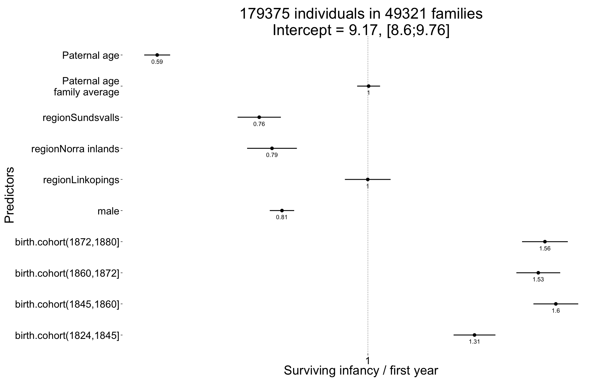
plot_residuals(Survive_infancy)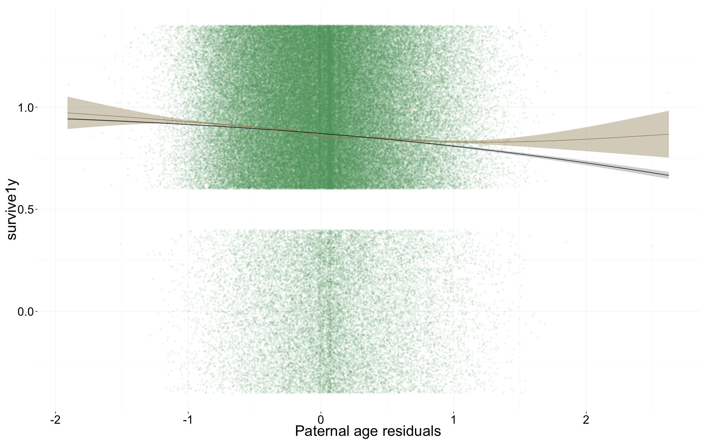
Survive_reproductive <- glmer(
surviveR ~ birth.cohort + male + paternalage.mean + paternalage.diff + region + (1|idParents),
data= ddb.1, subset = survive1y == TRUE,
family = 'binomial', control = control_defaults)
summary(Survive_reproductive)## Generalized linear mixed model fit by maximum likelihood (Laplace
## Approximation) [glmerMod]
## Family: binomial ( logit )
## Formula:
## surviveR ~ birth.cohort + male + paternalage.mean + paternalage.diff +
## region + (1 | idParents)
## Data: ddb.1
## Control: control_defaults
## Subset: survive1y == TRUE
##
## AIC BIC logLik deviance df.resid
## 96507 96623 -48242 96483 115951
##
## Scaled residuals:
## Min 1Q Median 3Q Max
## -3.975 0.274 0.337 0.400 1.087
##
## Random effects:
## Groups Name Variance Std.Dev.
## idParents (Intercept) 0.692 0.832
## Number of obs: 115963, groups: idParents, 35494
##
## Fixed effects:
## Estimate Std. Error z value Pr(>|z|)
## (Intercept) 2.3279 0.0349 66.7 < 2e-16 ***
## birth.cohort(1824,1845] 0.1963 0.0312 6.3 3.1e-10 ***
## birth.cohort(1845,1860] -0.1186 0.0313 -3.8 0.00015 ***
## birth.cohort(1860,1872] -0.4097 0.0308 -13.3 < 2e-16 ***
## birth.cohort(1872,1880] -0.5396 0.0330 -16.4 < 2e-16 ***
## male -0.1314 0.0178 -7.4 1.4e-13 ***
## paternalage.mean 0.0966 0.0164 5.9 3.5e-09 ***
## paternalage.diff -0.2425 0.0181 -13.4 < 2e-16 ***
## regionLinkopings -0.5683 0.0299 -19.0 < 2e-16 ***
## regionNorra inlands -0.1392 0.0312 -4.5 8.2e-06 ***
## regionSundsvalls -0.0698 0.0284 -2.5 0.01401 *
## ---
## Signif. codes: 0 '***' 0.001 '**' 0.01 '*' 0.05 '.' 0.1 ' ' 1
##
## Correlation of Fixed Effects:
## (Intr) b.(182 b.(184 b.(186 b.(187 male ptrnlg.m ptrnlg.d
## b.(1824,184 -0.528
## b.(1845,186 -0.577 0.540
## b.(1860,187 -0.593 0.533 0.598
## b.(1872,188 -0.568 0.500 0.540 0.595
## male -0.274 -0.003 -0.002 0.003 0.004
## paternlg.mn -0.068 0.063 0.054 0.035 0.027 -0.003
## patrnlg.dff 0.068 -0.059 -0.037 -0.081 -0.088 0.001 0.003
## regnLnkpngs -0.625 0.140 0.195 0.212 0.225 0.007 0.007 -0.043
## rgnNrrinlnd -0.518 0.110 0.120 0.120 0.111 0.001 -0.036 -0.019
## rgnSndsvlls -0.479 0.039 0.043 -0.005 -0.004 0.002 0.038 0.011
## rgnLnk rgnNri
## b.(1824,184
## b.(1845,186
## b.(1860,187
## b.(1872,188
## male
## paternlg.mn
## patrnlg.dff
## regnLnkpngs
## rgnNrrinlnd 0.522
## rgnSndsvlls 0.538 0.515Survive_reproductive_coefs = fortify_mine(Survive_reproductive)
plot_fortified_mer(Survive_reproductive_coefs, "Surviving to reproductive age / 15 years")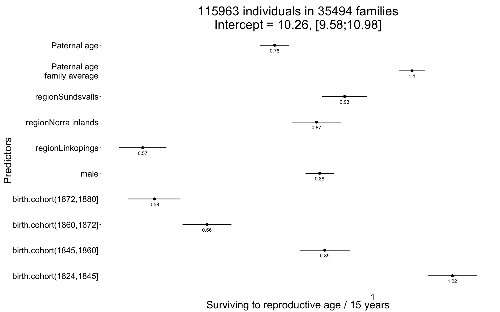
plot_residuals(Survive_reproductive)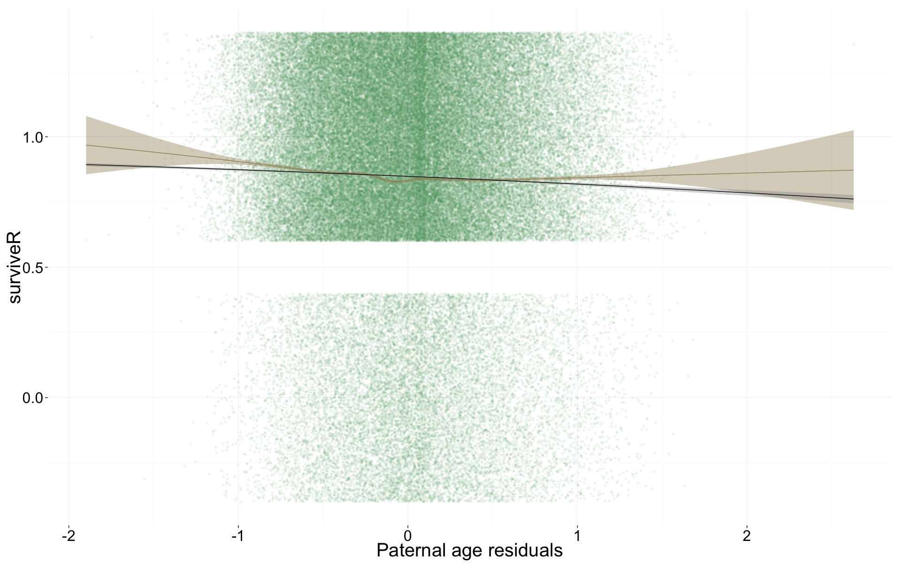
Ever_married <- glmer(
ever_married ~ birth.cohort + male + paternalage.mean + paternalage.diff + region + (1|idParents),
data= ddb.1, subset = surviveR == T & byear < 1850,
family = 'binomial', control = control_defaults )
summary(Ever_married)## Generalized linear mixed model fit by maximum likelihood (Laplace
## Approximation) [glmerMod]
## Family: binomial ( logit )
## Formula:
## ever_married ~ birth.cohort + male + paternalage.mean + paternalage.diff +
## region + (1 | idParents)
## Data: ddb.1
## Control: control_defaults
## Subset: surviveR == T & byear < 1850
##
## AIC BIC logLik deviance df.resid
## 60959 61047 -30470 60939 48697
##
## Scaled residuals:
## Min 1Q Median 3Q Max
## -2.535 -0.849 0.495 0.648 1.984
##
## Random effects:
## Groups Name Variance Std.Dev.
## idParents (Intercept) 0.739 0.86
## Number of obs: 48707, groups: idParents, 17347
##
## Fixed effects:
## Estimate Std. Error z value Pr(>|z|)
## (Intercept) 1.0711 0.0364 29.4 < 2e-16 ***
## birth.cohort(1824,1845] -0.0812 0.0262 -3.1 0.002 **
## birth.cohort(1845,1860] -0.2662 0.0399 -6.7 2.6e-11 ***
## male -0.2296 0.0217 -10.6 < 2e-16 ***
## paternalage.mean -0.0456 0.0193 -2.4 0.018 *
## paternalage.diff -0.2110 0.0226 -9.3 < 2e-16 ***
## regionLinkopings -1.2236 0.0373 -32.8 < 2e-16 ***
## regionNorra inlands 0.0783 0.0394 2.0 0.047 *
## regionSundsvalls -0.0389 0.0379 -1.0 0.305
## ---
## Signif. codes: 0 '***' 0.001 '**' 0.01 '*' 0.05 '.' 0.1 ' ' 1
##
## Correlation of Fixed Effects:
## (Intr) b.(182 b.(184 male ptrnlg.m ptrnlg.d rgnLnk rgnNri
## b.(1824,184 -0.523
## b.(1845,186 -0.387 0.430
## male -0.302 0.000 -0.001
## paternlg.mn -0.124 0.094 0.062 0.000
## patrnlg.dff 0.139 -0.125 -0.100 0.009 0.003
## regnLnkpngs -0.708 0.191 0.174 0.012 0.034 -0.042
## rgnNrrinlnd -0.628 0.168 0.123 -0.011 -0.007 -0.046 0.558
## rgnSndsvlls -0.598 0.065 0.065 -0.011 0.061 -0.039 0.556 0.528Ever_married_coefs = fortify_mine(Ever_married)
plot_fortified_mer(Ever_married_coefs, "Odds of ever marrying")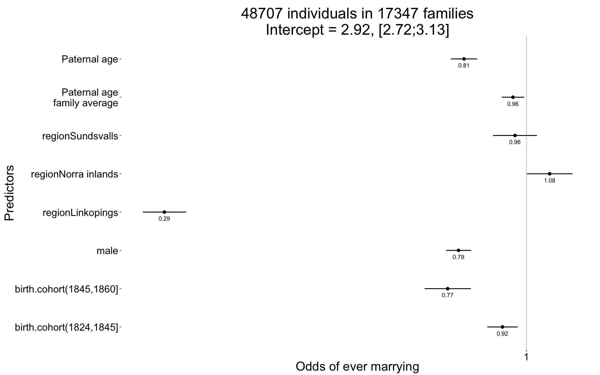
plot_residuals(Ever_married)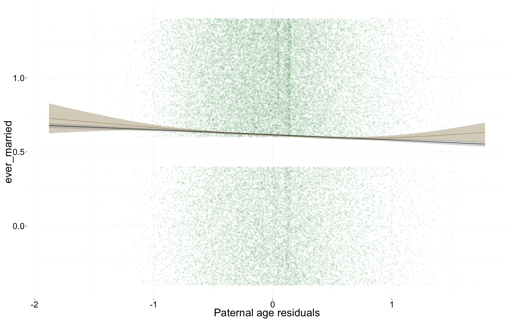
Children <- glmer(
children ~ center(spouses)*male + birth.cohort + paternalage.mean + paternalage.diff + region + (1|idParents) + (1|idIndividu),
data= ddb.1, subset = spouses > 0 & byear < 1850,
family = 'poisson', control = control_defaults )
summary(Children)## Generalized linear mixed model fit by maximum likelihood (Laplace
## Approximation) [glmerMod]
## Family: poisson ( log )
## Formula:
## children ~ center(spouses) * male + birth.cohort + paternalage.mean +
## paternalage.diff + region + (1 | idParents) + (1 | idIndividu)
## Data: ddb.1
## Control: control_defaults
## Subset: spouses > 0 & byear < 1850
##
## AIC BIC logLik deviance df.resid
## 150719 150827 -75346 150693 29952
##
## Scaled residuals:
## Min 1Q Median 3Q Max
## -1.7534 -0.6212 0.0523 0.4582 1.4870
##
## Random effects:
## Groups Name Variance Std.Dev.
## idIndividu (Intercept) 0.2767 0.526
## idParents (Intercept) 0.0603 0.246
## Number of obs: 29965, groups: idIndividu, 29965; idParents, 13542
##
## Fixed effects:
## Estimate Std. Error z value Pr(>|z|)
## (Intercept) 1.13755 0.02014 56.5 <2e-16 ***
## center(spouses) 0.32288 0.01810 17.8 <2e-16 ***
## male 0.13969 0.02328 6.0 2e-09 ***
## birth.cohort(1824,1845] 0.01078 0.01040 1.0 0.3000
## birth.cohort(1845,1860] -0.04816 0.01633 -2.9 0.0032 **
## paternalage.mean 0.00186 0.00771 0.2 0.8097
## paternalage.diff -0.02258 0.00916 -2.5 0.0137 *
## regionLinkopings -0.47161 0.01526 -30.9 <2e-16 ***
## regionNorra inlands 0.00965 0.01363 0.7 0.4789
## regionSundsvalls -0.31456 0.01374 -22.9 <2e-16 ***
## center(spouses):male 0.01566 0.02593 0.6 0.5459
## ---
## Signif. codes: 0 '***' 0.001 '**' 0.01 '*' 0.05 '.' 0.1 ' ' 1
##
## Correlation of Fixed Effects:
## (Intr) cntr() male b.(182 b.(184 ptrnlg.m ptrnlg.d rgnLnk
## centr(spss) -0.747
## male -0.565 0.650
## b.(1824,184 -0.376 0.003 -0.010
## b.(1845,186 -0.247 -0.002 -0.008 0.402
## paternlg.mn -0.089 0.003 0.002 0.095 0.059
## patrnlg.dff 0.105 0.007 -0.002 -0.116 -0.074 0.015
## regnLnkpngs -0.383 -0.005 -0.008 0.205 0.160 0.035 -0.048
## rgnNrrinlnd -0.398 -0.019 -0.002 0.189 0.121 -0.006 -0.037 0.490
## rgnSndsvlls -0.342 -0.036 -0.035 0.069 0.048 0.068 -0.037 0.463
## cntr(spss): 0.515 -0.697 -0.925 0.012 0.008 -0.004 0.002 0.009
## rgnNri rgnSnd
## centr(spss)
## male
## b.(1824,184
## b.(1845,186
## paternlg.mn
## patrnlg.dff
## regnLnkpngs
## rgnNrrinlnd
## rgnSndsvlls 0.510
## cntr(spss): -0.002 0.039Children_coefs = fortify_mine(Children)
plot_fortified_mer(Children_coefs, "Nr. Children (of those who had at least one spouse")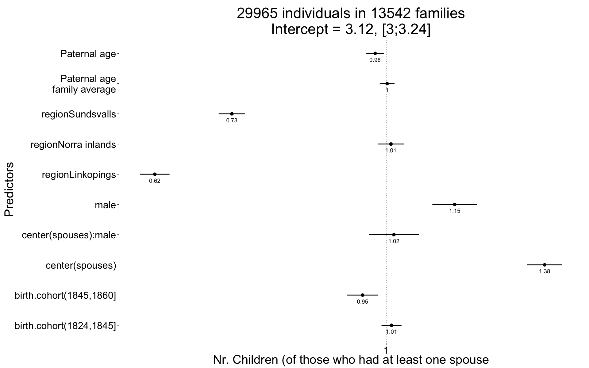
plot_residuals(Children)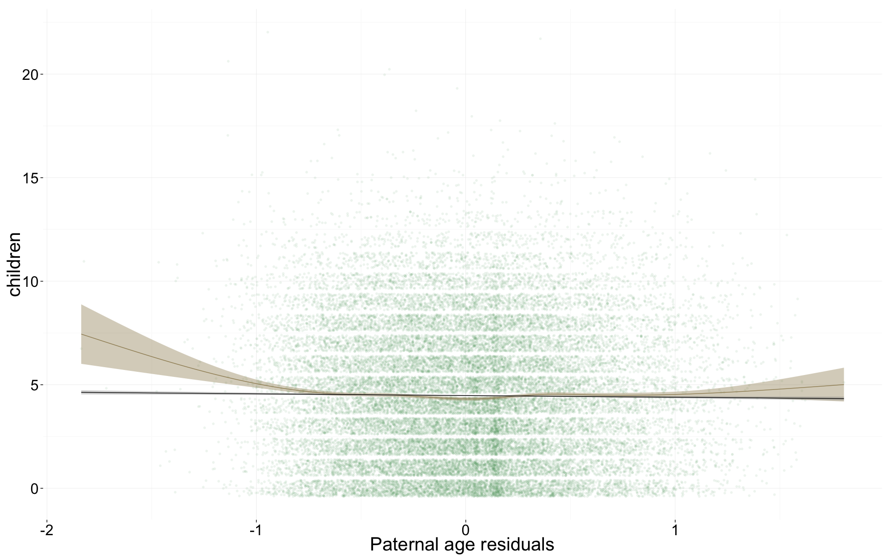
Children.surviving1y <- glmer(
children.surviving1y ~ center(children.wddate) + birth.cohort + male +paternalage.mean + paternalage.diff + region + (1|idParents) + (1|idIndividu),
data= ddb.1, subset = children > 0 & byear < 1850,
family = 'poisson', control = control_defaults )## Warning in checkConv(attr(opt, "derivs"), opt$par, ctrl = control$checkConv, : Model is nearly unidentifiable: very large eigenvalue
## - Rescale variables?summary(Children.surviving1y)## Generalized linear mixed model fit by maximum likelihood (Laplace
## Approximation) [glmerMod]
## Family: poisson ( log )
## Formula: children.surviving1y ~ center(children.wddate) + birth.cohort +
## male + paternalage.mean + paternalage.diff + region + (1 |
## idParents) + (1 | idIndividu)
## Data: ddb.1
## Control: control_defaults
## Subset: children > 0 & byear < 1850
##
## AIC BIC logLik deviance df.resid
## 93609 93707 -46792 93585 26278
##
## Scaled residuals:
## Min 1Q Median 3Q Max
## -5.998 -0.550 0.031 0.492 0.986
##
## Random effects:
## Groups Name Variance Std.Dev.
## idIndividu (Intercept) 0 0
## idParents (Intercept) 0 0
## Number of obs: 26290, groups: idIndividu, 26290; idParents, 12597
##
## Fixed effects:
## Estimate Std. Error z value Pr(>|z|)
## (Intercept) 0.659040 0.009530 69.2 < 2e-16 ***
## center(children.wddate) 0.170888 0.000890 192.1 < 2e-16 ***
## birth.cohort(1824,1845] -0.010465 0.006584 -1.6 0.11
## birth.cohort(1845,1860] -0.017722 0.010765 -1.6 0.10 .
## male -0.008060 0.006003 -1.3 0.18
## paternalage.mean -0.003583 0.004818 -0.7 0.46
## paternalage.diff 0.000273 0.006171 0.0 0.96
## regionLinkopings -0.076464 0.009803 -7.8 6.2e-15 ***
## regionNorra inlands -0.047376 0.007691 -6.2 7.3e-10 ***
## regionSundsvalls -0.085744 0.008530 -10.1 < 2e-16 ***
## ---
## Signif. codes: 0 '***' 0.001 '**' 0.01 '*' 0.05 '.' 0.1 ' ' 1
##
## Correlation of Fixed Effects:
## (Intr) cnt(.) b.(182 b.(184 male ptrnlg.m ptrnlg.d rgnLnk
## cntr(chld.) -0.556
## b.(1824,184 -0.474 -0.020
## b.(1845,186 -0.300 0.014 0.355
## male -0.287 -0.059 0.006 0.006
## paternlg.mn -0.108 -0.011 0.090 0.056 0.000
## patrnlg.dff 0.115 0.024 -0.090 -0.029 0.000 0.027
## regnLnkpngs -0.489 0.133 0.186 0.133 -0.021 0.033 -0.034
## rgnNrrinlnd -0.460 -0.064 0.194 0.105 -0.009 -0.011 -0.028 0.422
## rgnSndsvlls -0.475 0.141 0.046 0.015 0.001 0.066 -0.031 0.382
## rgnNri
## cntr(chld.)
## b.(1824,184
## b.(1845,186
## male
## paternlg.mn
## patrnlg.dff
## regnLnkpngs
## rgnNrrinlnd
## rgnSndsvlls 0.448Children.surviving1y_coefs = fortify_mine(Children.surviving1y)
plot_fortified_mer(Children.surviving1y_coefs, "Nr. Children who survive first year (of those who survived infancy")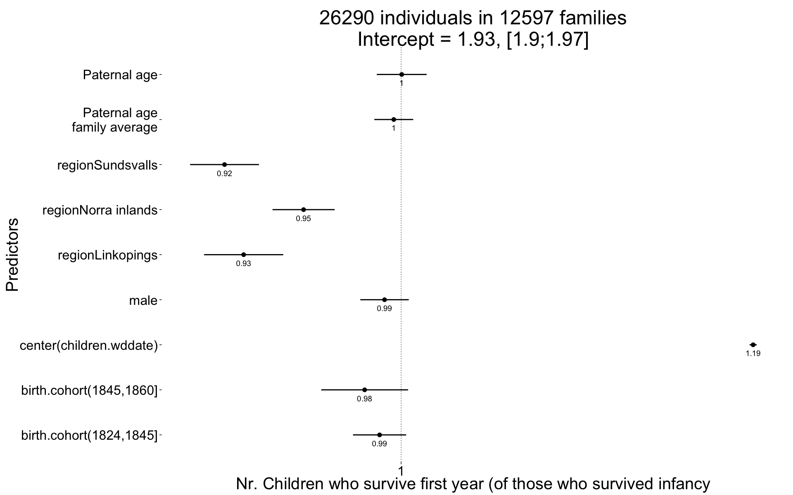
plot_residuals(Children.surviving1y)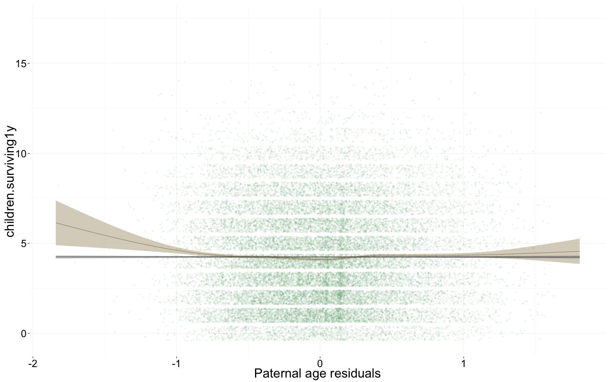
Grandchildren.per.Child <- glmer(
grandchildren ~ center(children) + male +paternalage.mean + paternalage.diff + region + (1|idParents) + (1|idIndividu),
data= ddb.1, subset = children > 0 & byear < 1800,
family = 'poisson', control = control_defaults )
summary(Grandchildren.per.Child)## Generalized linear mixed model fit by maximum likelihood (Laplace
## Approximation) [glmerMod]
## Family: poisson ( log )
## Formula: grandchildren ~ center(children) + male + paternalage.mean +
## paternalage.diff + region + (1 | idParents) + (1 | idIndividu)
## Data: ddb.1
## Control: control_defaults
## Subset: children > 0 & byear < 1800
##
## AIC BIC logLik deviance df.resid
## 15184 15231 -7584 15168 2514
##
## Scaled residuals:
## Min 1Q Median 3Q Max
## -1.4946 -0.5758 0.0024 0.1512 0.7496
##
## Random effects:
## Groups Name Variance Std.Dev.
## idIndividu (Intercept) 1.516 1.231
## idParents (Intercept) 0.464 0.681
## Number of obs: 2522, groups: idIndividu, 2522; idParents, 1479
##
## Fixed effects:
## Estimate Std. Error z value Pr(>|z|)
## (Intercept) -1.02948 0.08764 -11.75 <2e-16 ***
## center(children) 0.29026 0.01070 27.12 <2e-16 ***
## male 0.03310 0.06221 0.53 0.59
## paternalage.mean 0.00189 0.04545 0.04 0.97
## paternalage.diff 0.02302 0.06749 0.34 0.73
## regionNorra inlands 1.40774 0.07737 18.19 <2e-16 ***
## ---
## Signif. codes: 0 '***' 0.001 '**' 0.01 '*' 0.05 '.' 0.1 ' ' 1
##
## Correlation of Fixed Effects:
## (Intr) cntr() male ptrnlg.m ptrnlg.d
## cntr(chldr) -0.500
## male -0.332 -0.027
## paternlg.mn -0.164 0.007 -0.017
## patrnlg.dff 0.078 0.048 0.054 0.014
## rgnNrrinlnd -0.571 -0.091 -0.013 0.043 0.008Grandchildren.per.Child_coefs = fortify_mine(Grandchildren.per.Child)
plot_fortified_mer(Grandchildren.per.Child_coefs, "Nr. of grandchildren per child")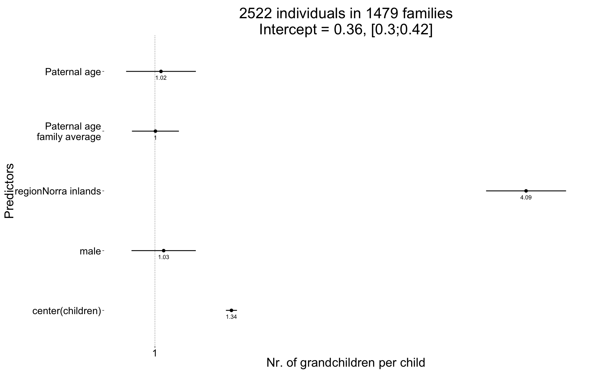
plot_residuals(Grandchildren.per.Child)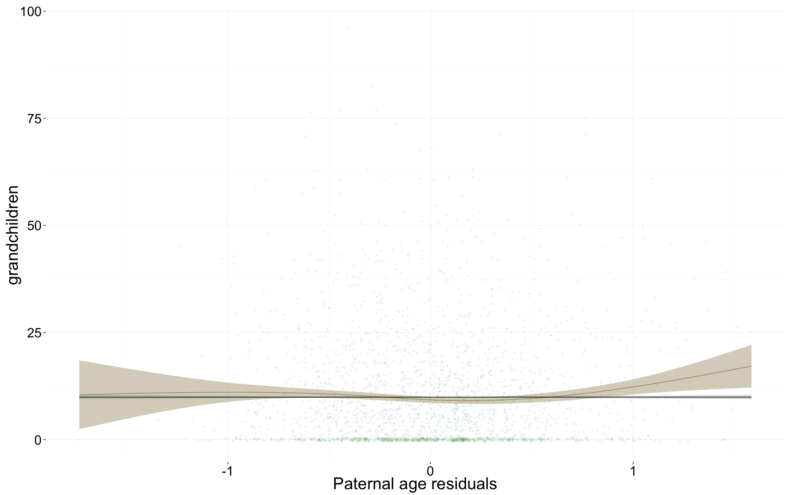
Any_surviving_children <- glmer(
any_surviving_children ~ birth.cohort + male + paternalage.mean + paternalage.diff + region + (1|idParents),
data= ddb.1,
subset = byear < 1850,
family = 'binomial', control = control_defaults )
summary(Any_surviving_children)## Generalized linear mixed model fit by maximum likelihood (Laplace
## Approximation) [glmerMod]
## Family: binomial ( logit )
## Formula:
## any_surviving_children ~ birth.cohort + male + paternalage.mean +
## paternalage.diff + region + (1 | idParents)
## Data: ddb.1
## Control: control_defaults
## Subset: byear < 1850
##
## AIC BIC logLik deviance df.resid
## 84702 84796 -42341 84682 84567
##
## Scaled residuals:
## Min 1Q Median 3Q Max
## -2.023 -0.519 -0.287 -0.182 4.564
##
## Random effects:
## Groups Name Variance Std.Dev.
## idParents (Intercept) 0.992 0.996
## Number of obs: 84577, groups: idParents, 24595
##
## Fixed effects:
## Estimate Std. Error z value Pr(>|z|)
## (Intercept) -0.6402 0.0337 -19.0 <2e-16 ***
## birth.cohort(1824,1845] -0.0669 0.0239 -2.8 0.0051 **
## birth.cohort(1845,1860] -0.4515 0.0383 -11.8 <2e-16 ***
## male -0.0362 0.0189 -1.9 0.0561 .
## paternalage.mean 0.1248 0.0175 7.1 1e-12 ***
## paternalage.diff -0.3455 0.0203 -17.0 <2e-16 ***
## regionLinkopings -1.9447 0.0374 -52.0 <2e-16 ***
## regionNorra inlands -0.0906 0.0363 -2.5 0.0127 *
## regionSundsvalls -0.3801 0.0350 -10.9 <2e-16 ***
## ---
## Signif. codes: 0 '***' 0.001 '**' 0.01 '*' 0.05 '.' 0.1 ' ' 1
##
## Correlation of Fixed Effects:
## (Intr) b.(182 b.(184 male ptrnlg.m ptrnlg.d rgnLnk rgnNri
## b.(1824,184 -0.509
## b.(1845,186 -0.361 0.422
## male -0.281 0.002 -0.001
## paternlg.mn -0.116 0.095 0.054 0.000
## patrnlg.dff 0.172 -0.150 -0.120 0.001 -0.003
## regnLnkpngs -0.644 0.201 0.179 -0.003 0.034 -0.050
## rgnNrrinlnd -0.665 0.181 0.130 -0.006 -0.008 -0.055 0.555
## rgnSndsvlls -0.627 0.066 0.065 -0.004 0.067 -0.032 0.558 0.558Any_surviving_children_coefs = fortify_mine(Any_surviving_children)
plot_fortified_mer(Any_surviving_children_coefs, "Any surviving children")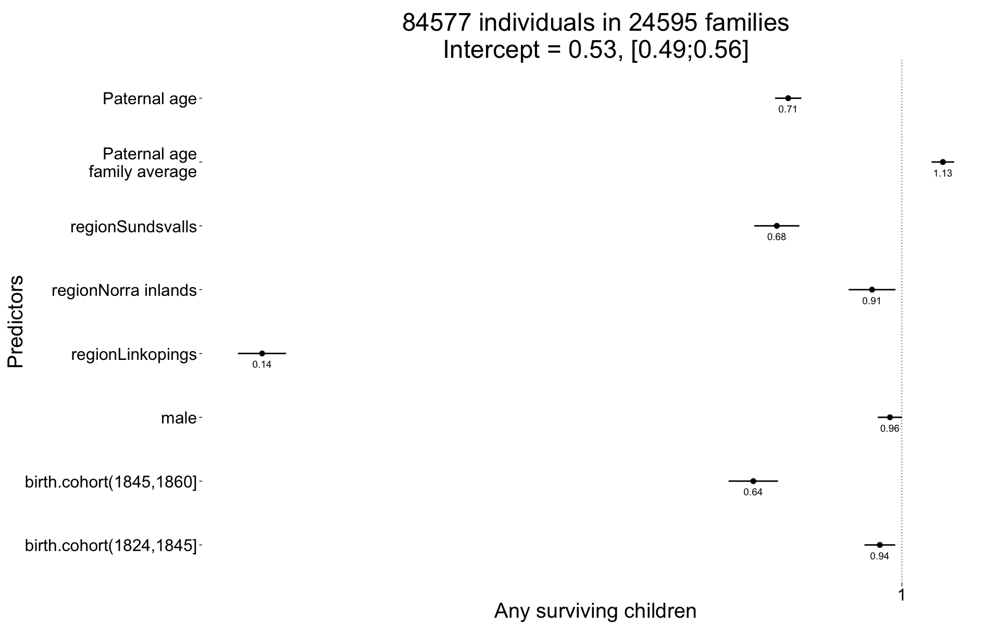
plot_residuals(Any_surviving_children)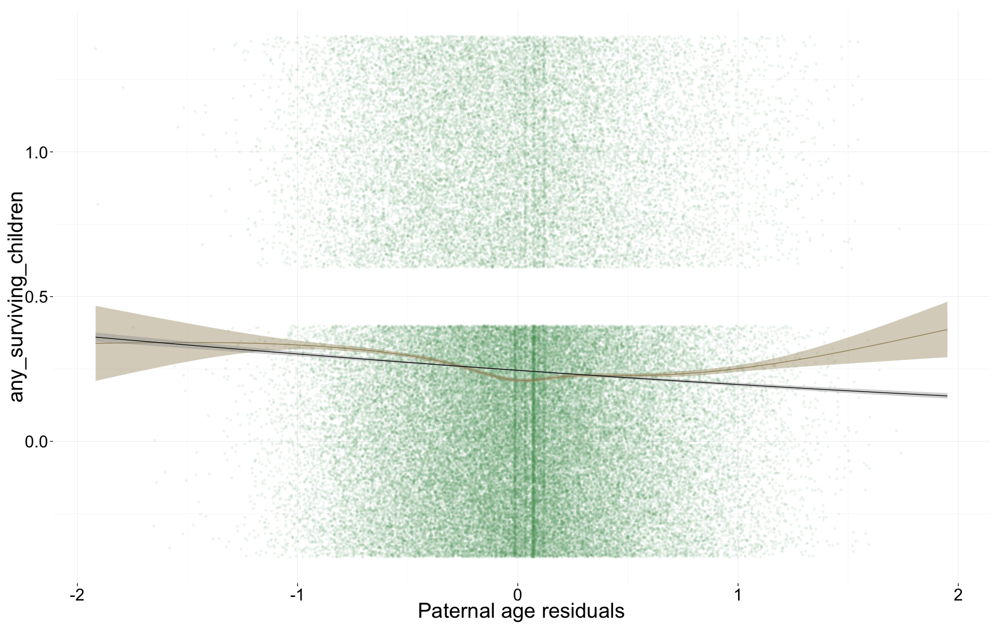
name = "ddb_main_effects"
save(list = lstype('confint.merMod'),file=paste0("coefs/",name,"_coefs.rdata"))
save(list = lstype(),file=paste0("coefs/",name,"_models.rdata"))sessionInfo()## R version 3.1.3 (2015-03-09)
## Platform: x86_64-apple-darwin13.4.0 (64-bit)
## Running under: OS X 10.10.2 (Yosemite)
##
## locale:
## [1] en_US.UTF-8/en_US.UTF-8/en_US.UTF-8/C/en_US.UTF-8/en_US.UTF-8
##
## attached base packages:
## [1] grid graphics grDevices utils datasets stats methods
## [8] base
##
## other attached packages:
## [1] MCMCglmm_2.22 ape_3.2 coda_0.17-1 pipeR_0.6
## [5] htmltools_0.2.6 XML_3.98-1.1 gridSVG_1.4-3 extrafont_0.17
## [9] lmerTest_2.0-20 blme_1.0-2 lme4_1.1-7 Rcpp_0.11.5
## [13] Matrix_1.1-5 zoo_1.7-11 foreign_0.8-63 mgcv_1.8-4
## [17] nlme_3.1-120 haven_0.1.1.9000 QuantPsyc_1.5 MASS_7.3-39
## [21] boot_1.3-15 psych_1.5.1 Hmisc_3.15-0 Formula_1.2-0
## [25] survival_2.38-1 lattice_0.20-30 reshape2_1.4.1 lubridate_1.3.3
## [29] car_2.0-25 stringi_0.4-1 dplyr_0.4.1 pander_0.5.2
## [33] knitr_1.9 rmarkdown_0.5.1 plyr_1.8.1 ggplot2_1.0.0
## [37] formr_0.1.11 data.table_1.9.5 stringr_0.6.2 devtools_1.7.0
##
## loaded via a namespace (and not attached):
## [1] acepack_1.3-3.3 assertthat_0.1 bitops_1.0-6
## [4] caTools_1.17.1 chron_2.3-45 cluster_2.0.1
## [7] codetools_0.2-10 colorspace_1.2-5 corpcor_1.6.7
## [10] cubature_1.1-2 DBI_0.3.1 digest_0.6.8
## [13] evaluate_0.5.5 extrafontdb_1.0 formatR_1.0
## [16] formula.tools_1.3.4 gdata_2.13.3 gplots_2.16.0
## [19] gtable_0.1.2 gtools_3.4.1 KernSmooth_2.23-14
## [22] labeling_0.3 latticeExtra_0.6-26 lazyeval_0.1.10
## [25] magrittr_1.5 memoise_0.2.1 minqa_1.2.4
## [28] mnormt_1.5-1 munsell_0.4.2 nloptr_1.0.4
## [31] nnet_7.3-9 numDeriv_2012.9-1 operator.tools_1.3.0
## [34] parallel_3.1.3 pbkrtest_0.4-2 proto_0.3-10
## [37] quantreg_5.11 RColorBrewer_1.1-2 RJSONIO_1.3-0
## [40] rpart_4.1-9 Rttf2pt1_1.3.3 scales_0.2.4
## [43] SparseM_1.6 splines_3.1.3 tcltk_3.1.3
## [46] tensorA_0.36 tools_3.1.3date()## [1] "Mon Mar 30 18:06:49 2015"